Workshop Overview
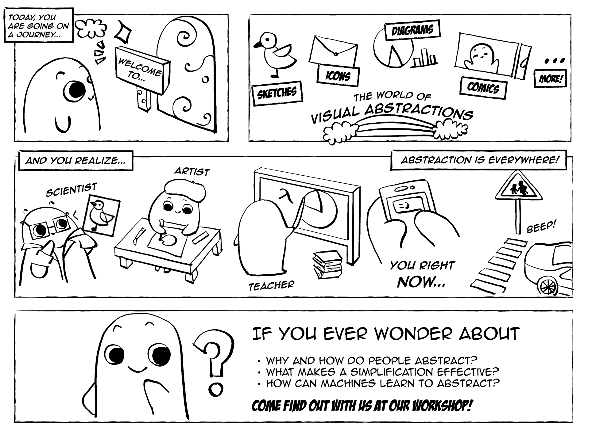
This workshop follows the Drawing and Sketching workshop at SIGGRAPH 2025, and the COGGRAPH workshop at CogSci 2024, continuing a growing effort to build an interdisciplinary community around these topics.
Invited Speakers & Panelist
We are excited to bring together an exceptional group this year, spanning cognitive science, computer graphics, HCI, and visual narrative.
Barbara Tversky
Stanford / Columbia University
Speaker
Professor Emerita of Psychology at Stanford University and Professor of Psychology at Columbia Teachers College. Her research examines spatial thinking, diagrammatic reasoning, and gesture, exploring how people use simplified visual representations to think and communicate. Her book Mind in Motion articulates a broad theory of how spatial cognition underlies language and abstract thought.
Aaron Hertzmann
Adobe Research
Speaker
Principal Scientist at Adobe Research and an Affiliate Professor at the University of Washington. His work examines the intersection of computer graphics, machine learning, and art. He pioneered key techniques in stylization and rendering, and his research explores how people perceive, depict, and interpret visual representations.
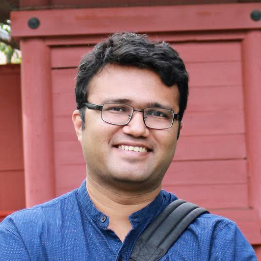
Rubaiat Habib
Adobe Research
Speaker
Senior Research Scientist at Adobe Research. His work lies at the intersection of humancomputer interaction and computer graphics, focusing on sketch-based interfaces, dynamic drawings, and tools that make visual expression more accessible. His research has led to products such as SketchBook Motion (Apple’s Best iPad App 2016) and contributions to Adobe Character Animator (Engineering Emmy 2019).
Scott McCloud
Cartoonist & Comics Theorist
Panelist
Scott McCloud is a cartoonist and theorist, and one of the most influential figures in comics. He is the author of the landmark Understanding Comics trilogy, and the creator of works such as Zot! and The Sculptor. His books have been translated into more than sixteen languages, and he is a recipient of the Eisner and Harvey Awards. His work has influenced artists, designers, and researchers across fields, and offers a foundational perspective on how simplified images convey meaning.
Key Topics
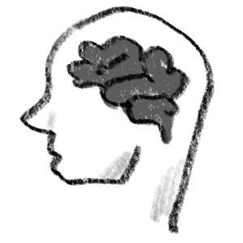
The Psychology of Abstraction
How do people perceive, produce, and use simplified visual representations? What cognitive mechanisms make abstraction effective?
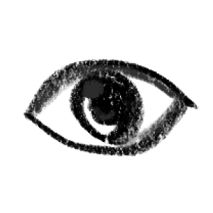
The Language of Abstraction
How do simple visual elements — lines, arrows, diagrams, comics — carry meaning? Are there shared principles underlying how we read and make pictures?
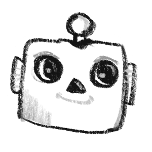
Computational Visual Abstraction
How can computational systems understand and generate abstract visual representations, and support human visual thinking?
Visual Communication
How do abstract visuals facilitate communication and collaboration? What makes diagrams, sketches, and visual explanations effective tools for sharing ideas?
Workshop Schedule
Part I: Making Visual Abstractions
From the Visual System to the Drawing Hand
Aaron Hertzmann (Adobe Research)
How we draw pictures (within the limitations of human vision)
Rubaiat Habib (Adobe Research)
Sketch-based interfaces and tools for visual creation
Live demo of the AI image generator by Reve, who is one of our sponsors.
10-minute break & open discussion
Part II: Thinking with Visual Abstractions
How Abstraction Structures Thought and Communication
Barbara Tversky (Stanford University)
Mind in Motion
Scott McCloud (Cartoonist & Theorist)
On visual communication and spatial metaphors
Panel: Scott McCloud & Barbara Tversky
Moderated by Judy Fan
Workshop Organizers
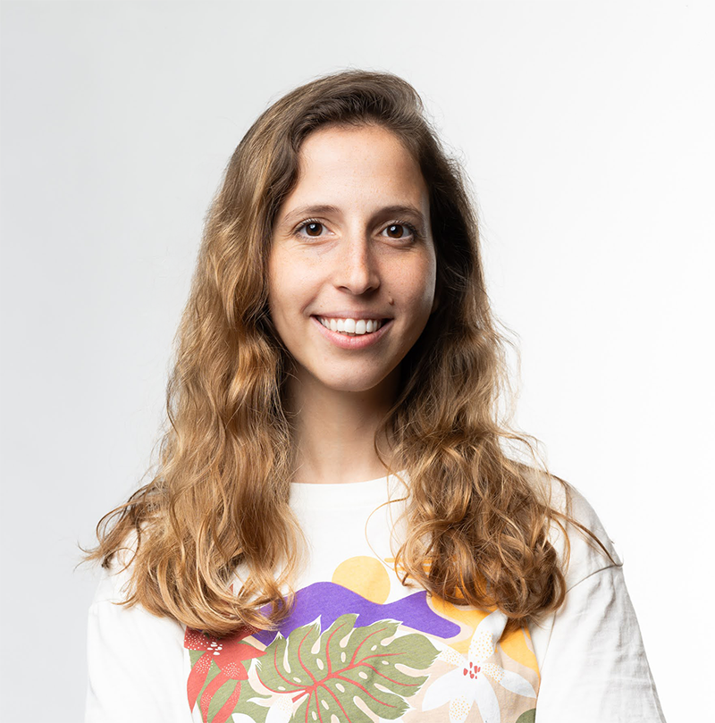
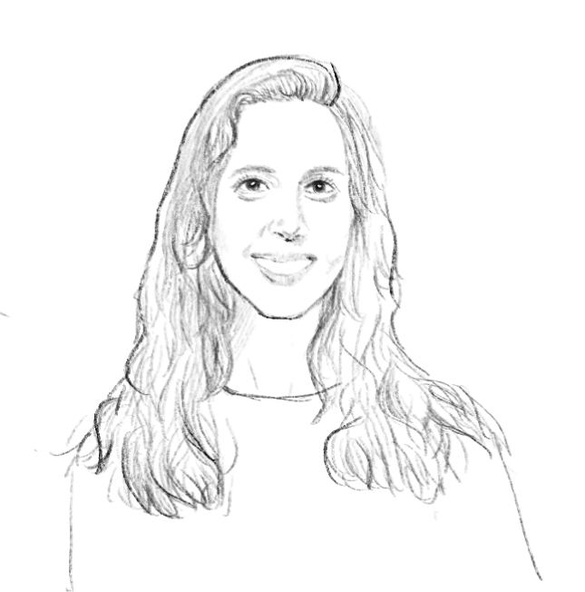
Yael Vinker
MIT CSAIL
Postdoctoral Associate working with Prof. Antonio Torralba at the intersection of computer graphics, visual design, and AI, with key contributions to generative sketching and visual abstraction.
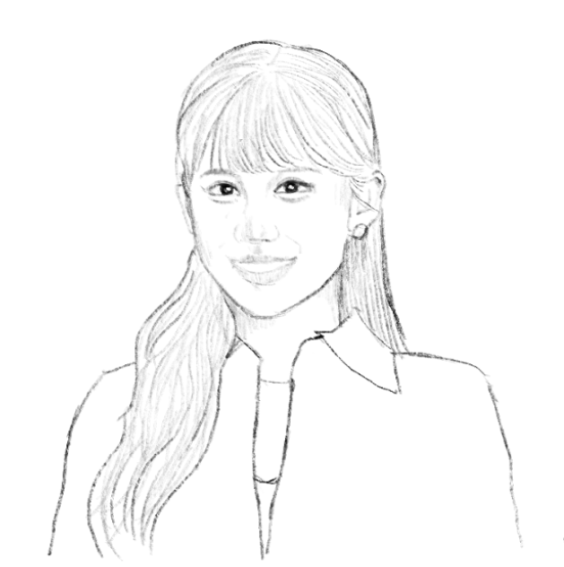
Mia Tang
Stanford University
Ph.D. student working with Prof. Maneesh Agrawala on generative models for visual expression, focusing on interactive, controllable AI systems that use sketches to support creative tasks.
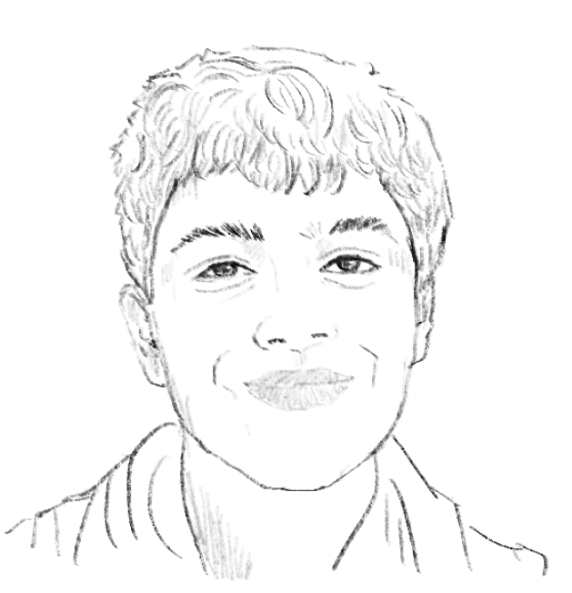
Kartik Chandra
MIT
PhD student connecting big ideas from computer graphics and cognitive science to understand the foundations of non-photorealistic depiction.
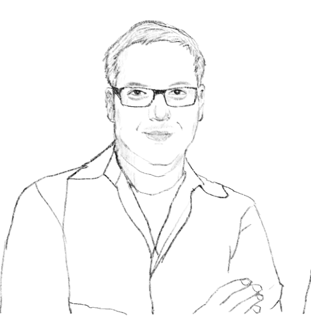
Maneesh Agrawala
Stanford University
Professor of Computer Science and Director of the Brown Institute, focusing on computer graphics, HCI, and visualization with cognitive design principles.
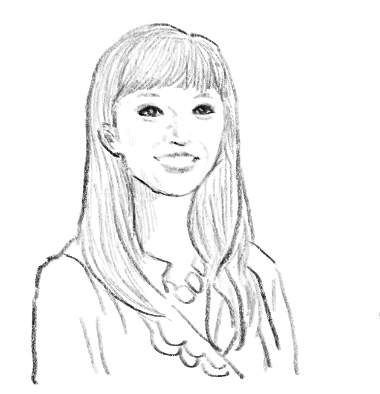
Judith E. Fan
Stanford University
Assistant Professor of Psychology directing the Cognitive Tools Lab, studying how people use external representations like drawings to support learning, communication, and problem-solving.
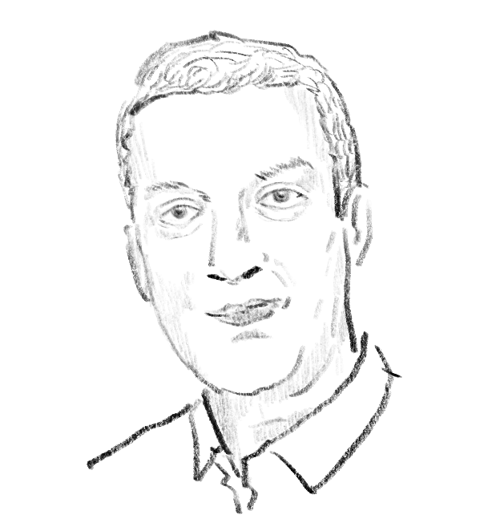
Aaron Hertzmann
Adobe Research
Principal Scientist exploring the intersection of computer graphics, machine learning, and art, pioneering techniques in stylization and rendering.
Join Us at SIGGRAPH 2026
This workshop is for anyone interested in visual abstraction — sketches, drawings, diagrams, icons, comics, and other simplified visual forms — whether as a subject of scientific study, a creative practice, or a computational challenge.
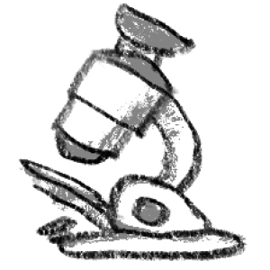
Researchers
In graphics, AI, and computer vision
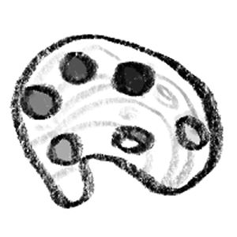
Artists & Designers
Exploring AI-human collaboration
Cognitive Scientists
Studying visual cognition
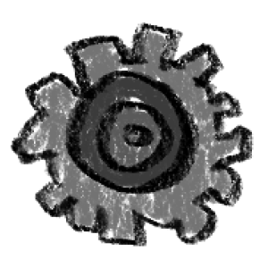
Practitioners
Building generative models
If a line can say a lot, imagine what we can say together.
We are grateful for the generous support of our sponsors.